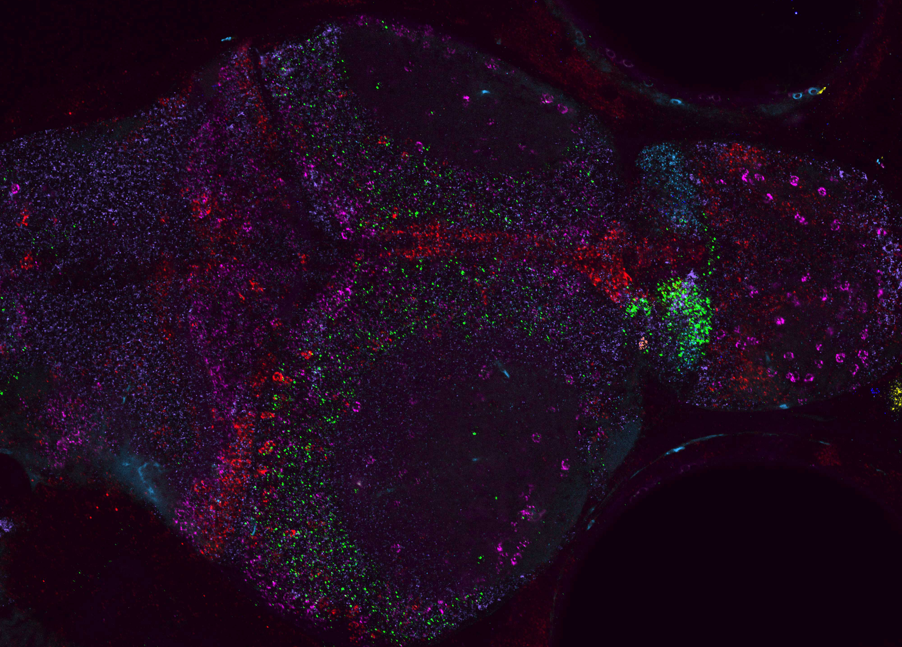
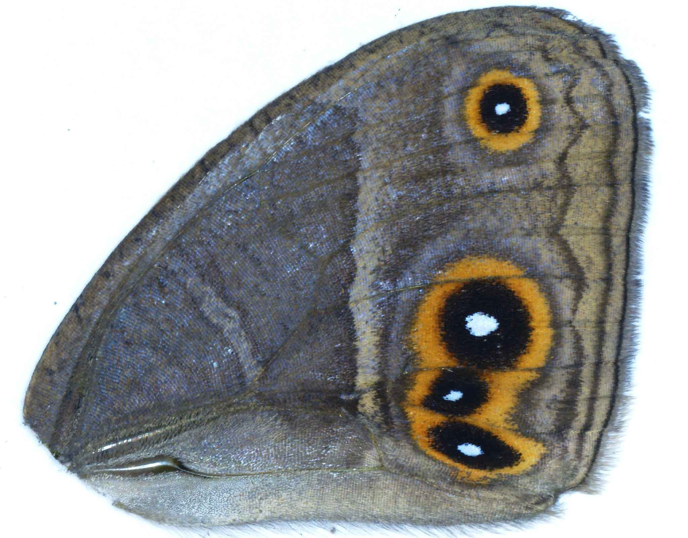
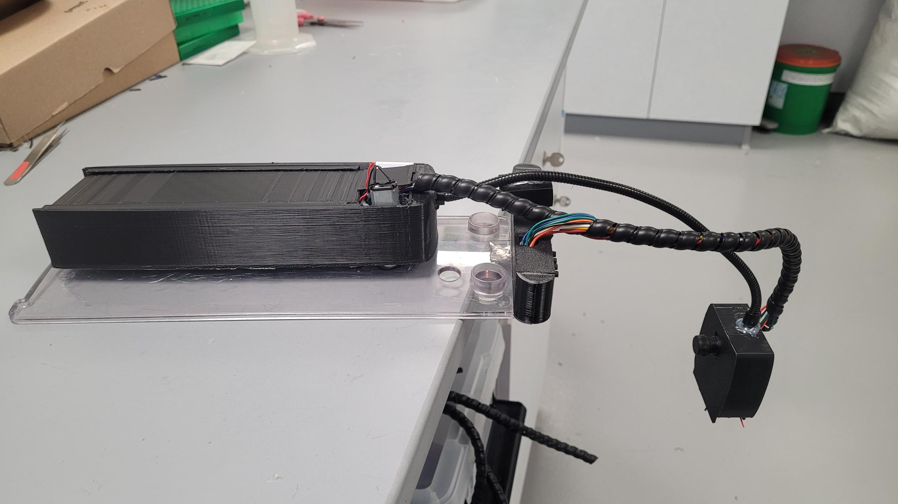
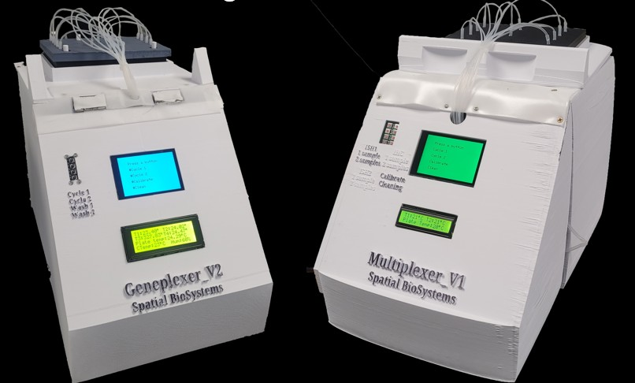
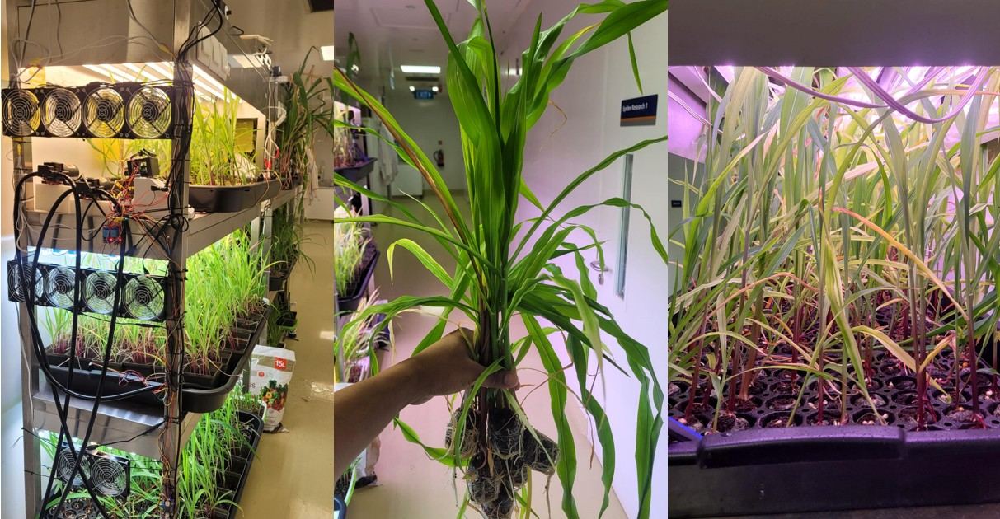
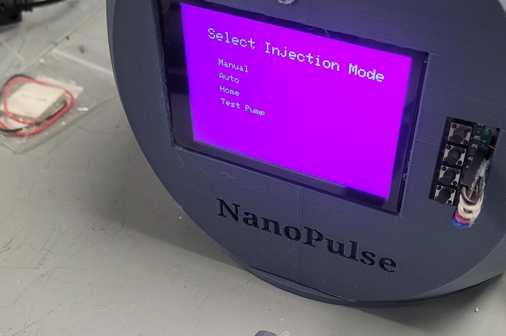

Featured
In situ atlas
Gene expression images from butterfly wings and brains and zebrafish larvae. Search by gene, filter by tissue and stage, and open any image at full resolution.
Open the atlas
Butterfly CRISPR
Wing pattern changes after CRISPR gene editing.
View more →
FISHER Robot
Building and testing the automatic fish feeder.
View more →
RAM-FISH Robot
The fluidics robot that runs RAM-FISH staining.
View more →
Corn System
CORN-DRIVE, the automated corn growing platform.
View more →
NanoPulse Microinjector
A low-cost injector for CRISPR in embryos.
View more →